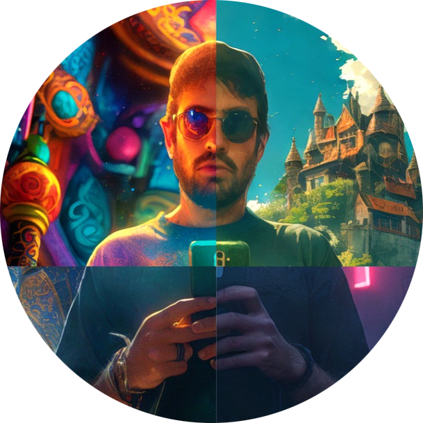

PhD in Mathematics building at the intersection of deep learning, 3D computer vision, and biomedical imaging — from academic research at TUM to co-founding startups.

3D deep learning, shape reconstruction, and novel view synthesis with diffusion models under Prof. Daniel Cremers.
Leading biomedical imaging AI — algorithm and software development for next-generation vascular imaging. Founding team member.
Building bleeding-edge AI solutions. Currently in stealth mode across Munich, Mexico City, and the Bay Area.
See all 14+ publications on Google Scholar
I'm a Mexican mathematician and AI researcher based in Munich, Germany. I hold a PhD in Mathematics from LMU Munich (supervised by Prof. Gitta Kutyniok) and dual BSc degrees in Mathematics and Physics from UNAM, both with near-perfect GPAs.
My research bridges applied harmonic analysis, deep learning, and inverse problems — with applications in 3D computer vision, biomedical imaging, and computational physics. I currently work in the Computer Vision Group at TUM with Prof. Daniel Cremers.
Beyond academia, I co-founded AngioWave Imaging, a biomedical startup at the intersection of AI and vascular imaging, and am building a new venture in stealth. Previously, I led AI at NAZCA, a leading LatAm VC fund.